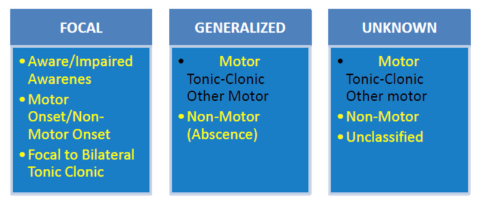

Pergunta central · Pág. 03 de 07
Duas de quatro: o que separa focal de generalizada
O que separa focal de generalizada no primeiro segundo da crise?
A classificação começa no início, não no meio do abalo. É o discriminador que tudo o que vem depois depende.
Por que classificar
A classificação das crises é muito importante: o tratamento depende dela e o pensamento sindrômico também. Classificar mal é escolher mal o caminho terapêutico e o diagnóstico de síndrome.
Quatro citadas, duas ensinadas (gap honesto)
Existem, na contemporaneidade, quatro classificações das crises. Neste eixo ensinam-se duas classificações operacionais; as outras duas não são desenvolvidas aqui — não inventar.
Os dois eixos principais ensinados: crise focal ou crise generalizada.
Focal (ex-“parcial”)
Início · 1 hemisfério
Definição-chave: um lado só. O fenômeno nasce em um hemisfério.
Generalizada
Início · 2 hemisférios
Definição-chave: início bilateral. A crise começa nos dois.
A definição pelo início
Crise focal (antigamente “parcial”): inicia em um só hemisfério.
Se a crise começa nos dois hemisférios, é, por definição, generalizada.
O discriminador é o primeiro segundo — onde o fenômeno nasce — não o que se vê depois que o abalo se espalhou.
GAP · 4 classificações citadas · 2 ensinadas — não inventar as outras duas.
| Focal (ex-parcial) | Generalizada | |
|---|---|---|
| Início | 1 hemisfério | 2 hemisférios |
| Definição-chave | um lado só | início bilateral |

O que a banca quer
Saber que “parcial” é nomenclatura antiga de focal, e que a chave é o hemisfério de início.
Revisão ativa
- Qual o discriminador temporal de focal vs generalizada?
- O que fazer com as “outras duas” classificações citadas mas não ensinadas?
- Por que o tratamento depende dessa bipartição?
Quiz
Conexão
A focal ainda se abre em consciência e motor — e pode terminar em TCG.